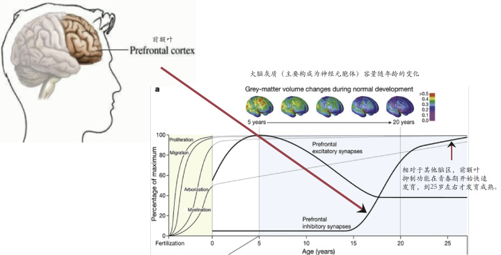
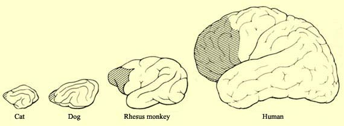
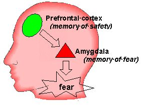
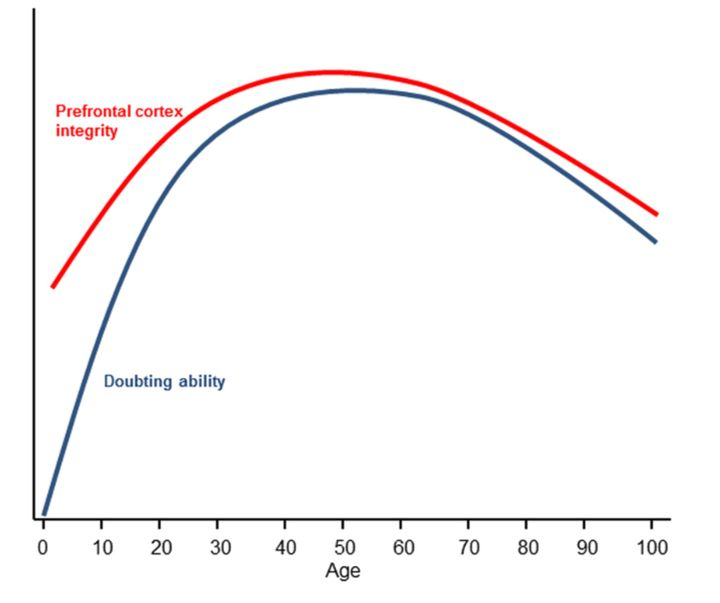

认知生理学视角下的青年烦恼与青年政治
作者：Zane - 知乎
按：原文发布时间为2015年，原名为《前额叶正在发育的一代》。
开宗名义，当今的中学生大学生以及刚出来工作不久的年轻人，都是前额叶仍在发育成长的一代_。

大脑的前额叶(如上图)是我们额头及头顶前部区域所对应的脑区。它与全脑其他部位有广泛的双向链接。因此，前额叶主要接收和综合由全脑其他部位传入的各种信息，并能及时发出调控的指令（通常以抑制其他脑区活动为主）。所以说，前额叶对大脑整体有组织性、指导性和调节性的影响，是大脑真正的“中枢”，负责着记忆、判断、分析、思考、操作、决策等复杂高级的认知活动。

人类通过长久的进化历程，才进化出比例相当大的前额叶。可以说，前额叶是人类之所以是“宇宙的精华，万物的灵长”的根本。然而，令人吃惊的是， 前额叶的诸多功能，在幼儿期稍微发育后，直到青春期才有爆发式的发展。这些发展很多集中在前额叶抑制型神经细胞的发育。这些神经细胞通常发出抑制性指令， 让下游神经细胞活性降低。
最常用的例子是情绪控制的年龄差异。小时候，我们通常很害怕这个害怕那个，例如怕黑，怕鬼，怕夜里上厕所。然而，长大后，这种怕慢慢消退，因为我们开始理性思考，我们不再怕黑怕鬼怕夜里上厕所。这种理性思考，就是前额叶的功能逐渐健全的体现。在认知神经科学里面，虽然尚有不清楚的地方，但人们通常认为这种情绪调控实质上是前额叶对下游情绪脑区（amygdala杏仁核）的抑制调控，即前额叶抑制了杏仁核的神经活动。

此外，另外的一个的例子，就是前额叶发展与思辨能力的关系。怀疑能力正是伴随着前额叶的增长而增长，伴随其消退而消退。为什么蓬头稚子和长者老人都容易受骗？从认知神经科学的角度来看，这和前额叶的生长发育规律有关。

因此，许多人把青少年在青春期里的很多问题，看作是前额叶在发育而又未成熟的体现。例如，“少年不知愁滋味”，却常常“为赋新词强说愁”。这里的愁，体现了少年日渐成型的思考思维活动。哪个少年没有类似“维斯特式”的烦恼？为什么有些人忧愁这个烦恼那个？没有思考，无忧无虑也就没有那么多问题了。因此，开始烦，开始愁，正是青少年前额叶发展发育的一个重要体现。
然而，这个阶段的发展，却是尚未成熟的。也就是说，前额叶所具备的调控功能还没有建立起来。少年们不仅烦，而且容易躁 ，情绪很容易失控。烦与躁合并起来，也就是青春期叛逆的根源。
所以说，有时候，我们根本不知道少年们到底在思考什么：他们貌似想很多东西，思维有时头头是道，有时却断续偏激；有时候，我们根本不知道少年们到底在反抗什么：歇斯底里的背后，是为了诉求还是为了一吐为快的宣泄？
之所以会想到这里，是因为最近看到了台湾的反课纲学生运动。我很想知道，青少年的反抗与革命有多少是为了议题本身，有多少是因为思辨不足，有多少是因为情绪失控，有多少是因为社会对前额叶正在发育一代的理解不足？
首先，台湾反课纲学生运动（按：时间为2015年）是什么？台湾两党政治意识形态分裂严重，众所周知。陈水扁执政时把台湾历史教科书课纲按照“台独”思想来做调整，也不令人意外。这次，马英九政府把台湾历史教科书作“微调”，目的是为了把“台独史观”的成分降低，增加“中华民国史观”。所以，台湾历史课纲微调的过程、目标、动机都非常清楚，并不令人意外。然而，因为教育当局在修改课纲的时候没有把相关委员会的委员名字公开（为了保护委员免受干扰），这次的课纲就被炒作为“黑箱课纲”，因此，学生或自愿或被鼓动，就走上街头，甚至半夜冲进部长办公室、台湾立法院。这个活动的高潮，就是反课纲学生发言人在生日当天（7月30日）在家自杀，貌似在以行动死谏。这一场号称“公民不服从”的民主运动，也就变成了一场轰轰烈烈的革命。因此，出现了反课纲学生推打劝退的父母，说自己已经与政府革命，就不惜在家里也再掀一场革命，“反正我已经动手打我爸了”。
先不谈政治意识形态之分，先谈谈这些走上街头的高中生（16-20岁左右）。这个年龄，正好是前额叶正在发育的一代。这些孩子，他们能够在多大程度上为他们自己的行为负责？
在第一个层面上，他们思辨吗？正如前面所说，如果没有思考，少年也就不会有烦恼。烦恼正是少年思考的表现。这些反课纲的学生，脑袋空空，缺乏思考，随随便便就被人鼓动上街吗？我看，并不全然。青少年必然通过了思考，认为有些课纲微调内容有问题，制定时程序有瑕疵，因此要反对。可惜，前额叶正在发育的一代毕竟有缺陷，面对海量的信息来源，青少年往往思而不辨。其后果就是让他们很容易偏听偏信。例如，有人说新课纲把台湾最高峰写成喜马拉雅山（实际是玉山），他们就信了，认为课纲胡扯。后来被查明，这个纯粹是误传。他们先是反对内容，后来发现反对的内容并没有深挖的争议，就反对程序。然而，最后发现教育部门的程序瑕疵，也就只是没有公布审核委员的名字。是否公布，还在法院审理中。教育部门的妥协是新旧课纲并行，学校自主选择，有争议之处不考。即使是这样，抗议的学生还是要让教育部门负责人做一个yes or no的回答：你撤不撤回课纲？你下不下台？如果你不撤不下台，我们就抗争到底！这样硬生生把一个选择题变成一个非黑即白的是非题。试问，他们思辨吗？
在第二个层面，他们自控吗？前面谈到，前额叶正在发育的一代，不仅容易烦，而且容易躁。即便没有别人唆使，这些只想反对到底的青少年也可能会无法抑制心中的极端想法，而采取极端的行动。上街喊口号已经是小意思，违反法律冲撞政府机构已经变成家常便饭。再加上动不动就自杀，打父母，这种极端之再极端的做法让人不能再忽视他们的诉求。然而，他们真的只为了诉求吗？在这里面，有多少是从众，有多少是为了宣泄平时压抑太久的内心，有多少是为了”英雄出少年“那句古话？正如那个打父亲的学生所说的，“我在为台湾的未来努力！你做了什么贡献？” 事实上他的父母，成立了一个在台颇有名气的慈善基金会，鼓励热爱生命的患病人士坚持治疗。认为自己是对的而觉得自己所从事的东西正确高尚（就像现代的中二病？60年代的青年一代？），若别人不接受意见则极端以对，恐怕这并不是控制力的表现。
如果前额叶正在发育的一代没有具备完整的思辨和自我控制的能力，那么这一代在多大程度上可以肩负自己乃至整个社会的责任？文革时期的红卫兵、为了祖国前程甘愿下乡一辈子的知识青年，以及前一阵子香港占中行动的年轻活动人士，台湾太阳花学运的活动人士，他们也都还是前额叶正在发育的一代。可是，回头想想，五四的一代，也不一样时前额叶正在发育的一代？爱因斯坦26岁就获得了之后让其荣膺诺贝尔奖的成果，牛顿23岁开启了他著名的万有引力定律的研究，马克-扎克伯格的Facebook首次实现盈利也只是在25岁，他们也还是前额叶正在发育的一代。这些个人或团体，他们有什么不同？
我想，撇开大脑发育快慢的个体差异不谈，在很大程度上，恰当合理的引导（自发或他发）对前额叶正在发育的一代非常重要。一个正在发生发展中的过程，将有各种可能性，会有各样的结果。正确的引导将决定思辨和自我控制能力能否及时养成。五四青年并不是完全自发，多少先进导师在背后指导鼓励；牛顿说他是站在巨人的肩膀上发现万有引力，而爱因斯坦何尝不是站在牛顿的肩膀上？然而，我们通常忘记，无论牛顿还是爱因斯坦，他们都用20多岁之前的时光，通过别人引导或者着自我学习，逐步爬上巨人的肩膀。马克-扎克伯格的成功也并非偶然，自己没有通过学习（包括自学）而来扎实的编程功底，连在学校闯祸也闯不出什么大名堂（他自制的网站瘫痪了学校服务器处理量）。
如果说今天学运学潮中的青少年没有受到任何人的引导（通常他们会如是认为），完全自发地去抗争，那么他们恐怕会越来越偏离正确的引导，因为引导的前提是不固执己见的虚心聆听和学习。每个人当然都可以是自己的导师，只要不断能够自我超越，与其求助别人的成功经验，不如鞭策自己更加进步。然而，为了少走弯路，听取别人的意见总是利大于弊的。无论如何，虚心，莫固执己见，不怕吃苦，是一切正向引导的根本。
我也要厚着脸皮说，我的前额叶还正在发育。处在这个年龄中的人，几乎人人都无法回避面对未来时的那种迷茫苦闷乃至烦躁（富二代另谈）。 因此，容易想太多，也容易动怒，但也每天不断地变得更加思辨和自我控制。每天各种媒介的信息对我们狂轰滥炸，我们的前额叶在加速工作，迫不及待地自我催熟。在这个动态的过程当中，不钻牛角尖，不要迷失自我，不要偏听偏信，不要固执己见，还是静下来虚心学习，忍耐吃苦，自学或者求助于他人。
我不认为前额叶还在发育的人具有为社会服务的完备能力（包括政治诉求），也不认为社会应该给予这一代人过多的期待（例如25岁之有成就，毕竟巨人的肩膀不是很好爬）。“出名要趁早”一句话恐怕影响了不少人，但是这种影响不见得是正面的。当人们看到 Justin Bieber 少时了了，大不太佳时，也就付之一笑。
最后的最后，前额叶还在发育的我们，还是抓紧宝贵的时间，努力学习（思维训练），完善前额叶的功能吧。这样，25岁以后十多二十多年的岁月里，我们才有足够的认知资本（才智），应对人生真正的大风大浪。共勉！